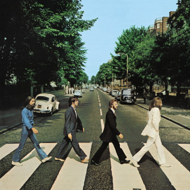
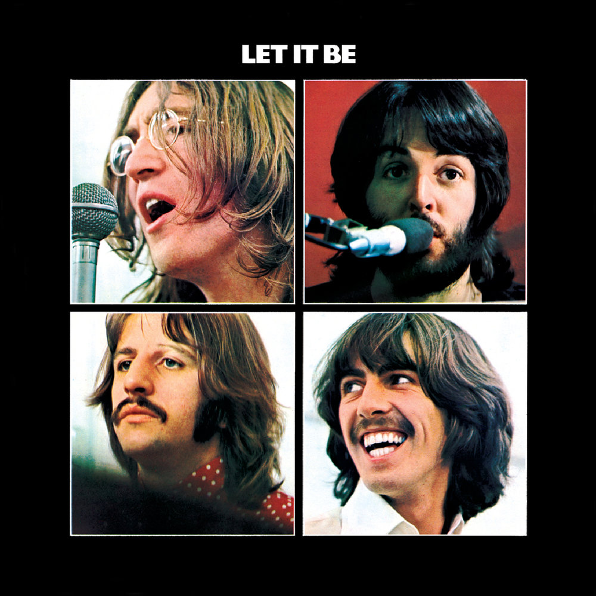

История создания и успеха
The Beatles начали свою историю в Ливерпуле в конце 1950-х годов. Изначально группа называлась The Quarrymen, но в 1960 году они взяли имя The Beatles. В состав вошли Джон Леннон, Пол Маккартни, Джордж Харрисон и Ринго Старр. Они стали всемирно известны благодаря своим инновационным подходам к музыке и влиянию на культуру. С их дебютным альбомом Please Please Me (1963) началась волна "битломании", а последующие альбомы, такие как Revolver и Sgt. Pepper’s Lonely Hearts Club Band, изменили представление о популярной музыке.
Группа распалась в 1970 году, но их музыка продолжает вдохновлять миллионы людей по всему миру. The Beatles оставили неизгладимый след в истории музыки и культуры.
Хронология выхода альбомов
| Год | Название альбома | Обложка | Примечания |
|---|---|---|---|
| 1963 | Please Please Me |  |
Дебютный альбом, начавший волну "битломании". |
| 1964 | A Hard Day's Night | Саундтрек к одноимённому фильму. | |
| 1965 | Rubber Soul |  |
Экспериментальный альбом с элементами фолка. |
| 1966 | Revolver | Переосмысление жанра и прорыв в студийной работе. | |
| 1967 | Sgt. Pepper’s Lonely Hearts Club Band |  |
Икона психоделической эры. |
| 1969 | Abbey Road |  | Знаковый альбом с культовой обложкой. |
| 1970 | Let It Be |  | Последний студийный альбом группы. |